| Textures |
A room's surfaces are flood fills (DO_ROOM_COMMAND): a fill code, $E6 to $FF, floods the area round the drawing's point with one of 26 textures of 32 bytes at $E0A4. What stops the flood is not the screen but the clean copy of it at $C000, where the room's lines are (copied there by code $E2, or drawn there alone after $E4 $00), and the fill marks each pixel it paints there too; the screen only receives the texture, which replaces whatever was under it.
A texture is a tile 16 pixels square in four cells of eight bytes, and the tile is anchored to the screen, not to the area: bit 3 of the line, counted up from the bottom, chooses the pair of cells (set: bytes 0-15, clear: bytes 16-31), bit 3 of the column the cell of the pair (clear: the first eight bytes, set: the second), and a cell's bytes run from the top of the character row. So two fills of one texture side by side join without a seam. Ville Krumlinde's notes read bytes 8-15 as eight more rows of one cell; they are the right-hand cell of the same rows (read from FILL_NEXT_SEED's addressing, and drawn here).
Each texture here is drawn by the game's own fill: a one-off room record -- a square outlined only in the clean copy ($E4 $00, four lines, $E4 $01), a point inside it and the fill code -- run in SkoolKit's simulator from the point where DRAW_CURRENT_ROOM has found its room, and coloured by ATTRI in the colours of the first room that uses the texture. The square is 64 pixels each way, four tiles, with a margin of the room's paper round it. Every picture was checked, pixel for pixel, against the texture's bytes read as described above.
Only 14 of the 26 are used by any room, directly or through the parts it draws (read from every room's and part's commands): 0-1, 3, 6-7, 9-11, 13-17, 21. The room counts below include the rooms that draw a part which fills with the texture.
| Texture code entry | As the fill draws it | What it shows | Used by |
|---|---|---|---|
| 0 $E6 TEXTURES | 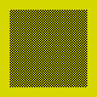 in the colours of room 2 | a fine chequer | 78 rooms: 2-78, 80 parts 8, 17, 36 |
| 1 $E7 TEXTURE1 | 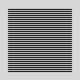 in the colours of room 56 | horizontal lines | 2 rooms: 56, 68 parts 7, 11 |
| 2 $E8 TEXTURE2 | 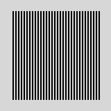 in black on white: no room uses it | vertical stripes | none |
| 3 $E9 TEXTURE3 | in the colours of room 2 | solid ink | 79 rooms: 2-80 parts 1, 2, 10, 13, 15, 17, 19, 20, 21, 26, 31, 35, 48 |
| 4 $EA TEXTURE4 | 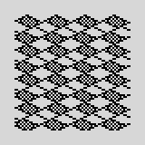 in black on white: no room uses it | diamonds of dots | none |
| 5 $EB TEXTURE5 | 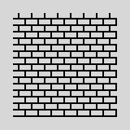 in black on white: no room uses it | bricks | none |
| 6 $EC TEXTURE6 | 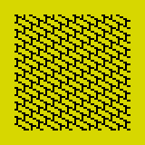 in the colours of room 2 | small bricks seen at an angle | 9 rooms: 2, 38, 42-44, 63-64, 69, 75 parts 11, 34, 35 |
| 7 $ED TEXTURE7 | 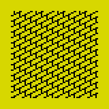 in the colours of room 41 | small bricks seen at the other angle | 7 rooms: 41-44, 63-64, 75 parts 11, 34, 35 |
| 8 $EE TEXTURE8 | 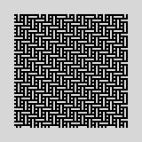 in black on white: no room uses it | a basket weave | none |
| 9 $EF TEXTURE9 | 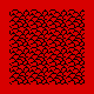 in the colours of room 3 | rough stones | 10 rooms: 3-8, 10-11, 74, 80 |
| 10 $F0 TEXTURE10 | 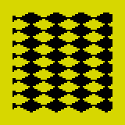 in the colours of room 2 | large diamonds | 5 rooms: 2, 47-50 |
| 11 $F1 TEXTURE11 | 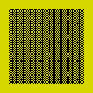 in the colours of room 2 | upright boards, with a grain | 22 rooms: 2, 20-21, 25-26, 28-29, 34-35, 41-42, 45-47, 57, 62-65, 71-72, 77 parts 5, 6 |
| 12 $F2 TEXTURE12 | 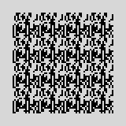 in black on white: no room uses it | not a pattern: bytes of the ROM | none |
| 13 $F3 TEXTURE13 | 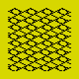 in the colours of room 15 | a net of scales | 16 rooms: 15-19, 21, 25-27, 29, 35-40 parts 13 |
| 14 $F4 TEXTURE14 | 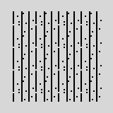 in the colours of room 53 | vertical lines, broken by dots | 12 rooms: 53-55, 57-60, 64-67, 77 parts 21 |
| 15 $F5 TEXTURE15 | 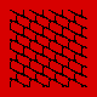 in the colours of room 8 | large bricks seen at an angle | 52 rooms: 8-14, 17, 19-20, 22-24, 26-31, 34-38, 40-41, 45-46, 51-60, 62, 64-73, 76-78 parts 15, 16, 19, 21, 28, 36 |
| 16 $F6 TEXTURE16 | 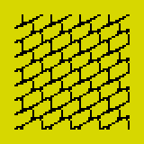 in the colours of room 2 | large bricks seen at the other angle | 53 rooms: 2, 13-29, 32, 34-35, 37-40, 45-46, 48-49, 51-62, 64-72, 76-78 parts 13, 15, 21, 22, 24, 28 |
| 17 $F7 TEXTURE17 | 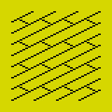 in the colours of room 2 | floorboards seen at an angle | 29 rooms: 2, 13, 17, 20, 28, 34, 41, 43, 53-61, 64-73, 77-78 parts 21, 22, 28, 47 |
| 18 $F8 TEXTURE18 | 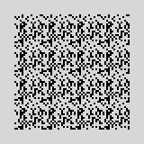 in black on white: no room uses it | not a pattern: noise | none |
| 19 $F9 TEXTURE19 | in black on white: no room uses it | nothing: all paper | none |
| 20 $FA TEXTURE20 | 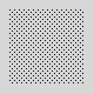 in black on white: no room uses it | a fine grid of dots | none |
| 21 $FB TEXTURE21 | 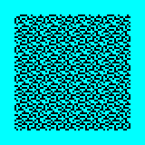 in the colours of room 29 | a dense speckle | 10 rooms: 29-33, 45-46, 51-52, 62 parts 19 |
| 22 $FC TEXTURE22 | 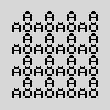 in black on white: no room uses it | letters: A with a ring, A and O with two dots | none |
| 23 $FD TEXTURE23 | 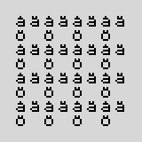 in black on white: no room uses it | letters: a with a ring, a and o with two dots | none |
| 24 $FE TEXTURE24 |  in black on white: no room uses it | nothing: all paper | none |
| 25 $FF TEXTURE25 |  in black on white: no room uses it | nothing: all paper | none |
Texture 12 is 32 bytes of the ROM: $0220-$023F, byte for byte (searched at this build) -- the end of the ROM's table of the keys' letters and digits and the start of its table of the keywords the keys give in extended mode. Drawn as a texture it is noise. No room fills with it.
Texture 18 is noise too: its 32 bytes have no pattern, and they are found nowhere else in memory or in the ROM (searched at this build). What they were is not known; no room fills with it (read), so whatever was there when the game was saved stayed there (inferred).
Textures 22 and 23 are not textures at all but eight characters, 8 by 8 each: a blank, the Swedish capitals with a ring and with two dots (Å, Ä, Ö), their small letters (å, ä, ö) and a blank -- the three letters the Swedish alphabet has after Z, in its order. The game's own font (FONT) has no letters but A to Z and no room fills with codes $FC or $FD, so the game never shows them; they are, most likely, a Swedish author's character definitions left where the textures were assembled (inferred). Printed here by the game's own printer (PRINT), with the font's address in PRINT_FIND_GLYPH pointed at them, in black on white:
They are not drawn in the game's font's style but in the ROM's: compared with the ROM's character set row for row (at this build), A with a ring: the ROM's A but for row 0; A with two dots: the ROM's A but for row 0; O with two dots: the ROM's O but for row 0; a with a ring: the ROM's a but for row 1; a with two dots: the ROM's a but for row 1; o with two dots: the ROM's o but for row 1. The rings and dots are added to the ROM's own letters, the one or two rows at the top.
Plainer ones: texture 3 is solid ink, and texture 19, texture 24, texture 25 are all paper -- a fill with one of those rubs out rather than draws. Of them only 3 is used.